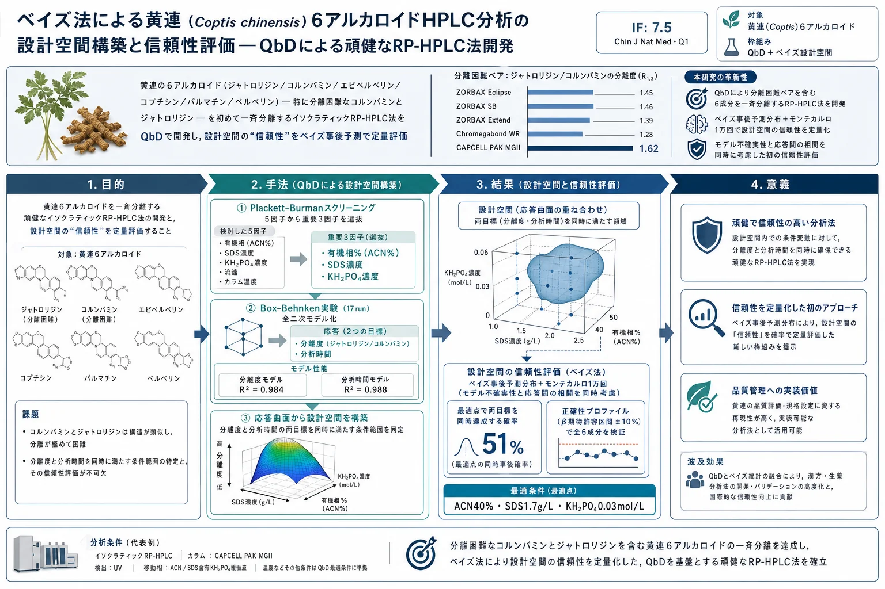
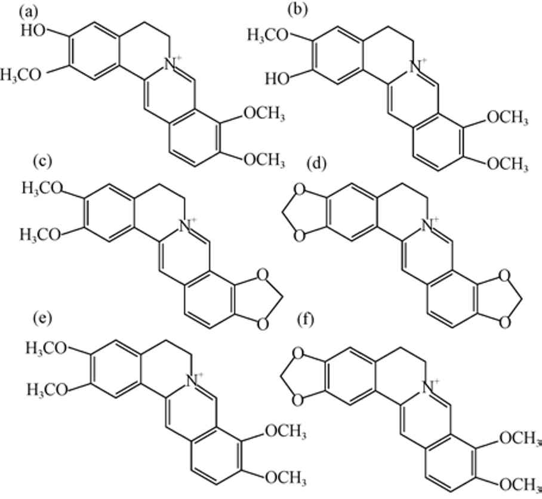
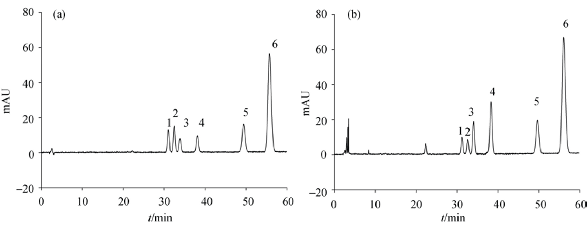
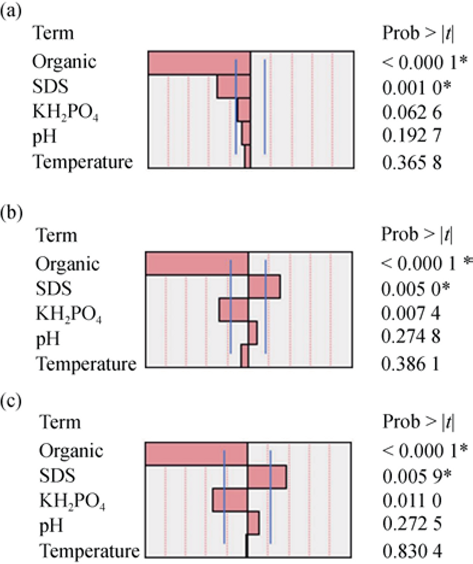
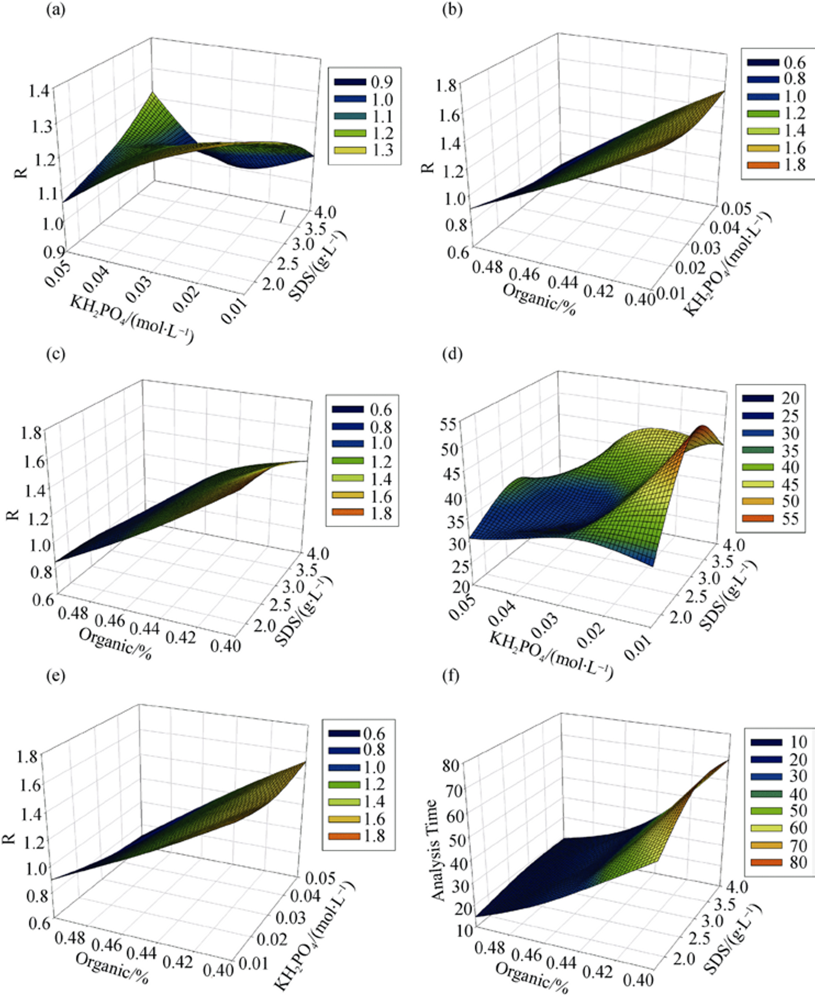
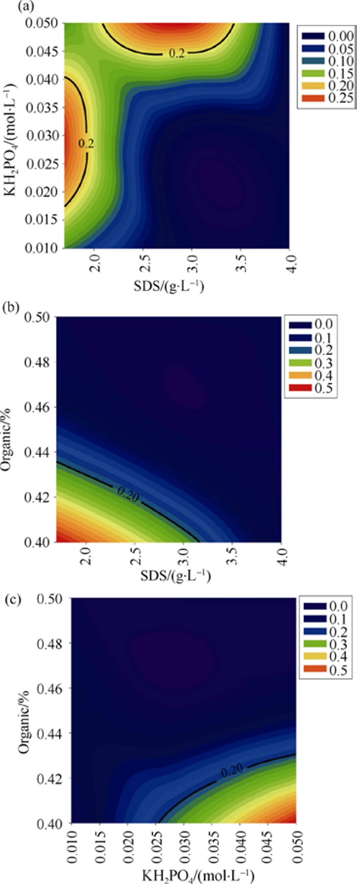
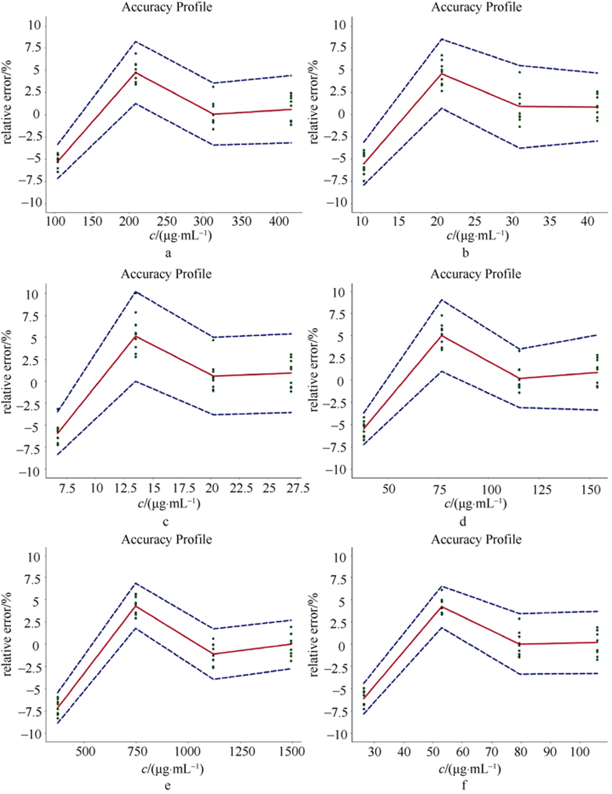

ベイズ法による黄連（Coptis chinensis）6アルカロイドHPLC分析の設計空間構築と信頼性評価 — QbDによる頑健なRP-HPLC法開発

<!-- 方針: 12ページのQbD/ベイズ設計空間 研究論文の全訳密度版。原文構成(序論→材料と方法→結果と考察→結論)に忠実。数値・表(Table1-8)・式(1)-(4)を保持。数式は元PDFのOCRが崩れていたため意味に基づき標準形で再掲。abstractの単位誤記(g·mL⁻¹→g·L⁻¹, mol·mL⁻¹→mol·L⁻¹)はMethodsの正しい単位に統一。「> 補足:」は訳者注。2026-07-16 品質監査で密度不足のため原文を再取得し、Table2(BBD 17run配置)・Table7(頑健性7検証点の全データ)・Table8(産地別6成分含量)・6成分全ての検量式を追加。 -->
書誌情報
- 標題（原題）: Establishment and reliability evaluation of the design space for HPLC analysis of six alkaloids in Coptis chinensis (Huanglian) using Bayesian approach
- 著者・所属: DAI Sheng-Yun, XU Bing, ZHANG Yi, LI Jian-Yu, SUN Fei, SHI Xin-Yuan, QIAO Yan-Jiang（北京中医薬大学 中医薬情報工学研究センター／教育部 中薬製造プロセス制御・新薬開発工学研究センター）
- 掲載誌・巻号・DOI: Chin J Nat Med, 2016, 14(9): 697–708. https://doi.org/10.1016/S1875-5364(16)30083-8
- インパクトファクター: 7.5（Chinese Journal of Natural Medicines, Q1・最新JCR。2016年当時は約2だが、本欄は誌の最新値を記載）
- 受理経過 / ライセンス: Received 2015-04-17 / Available online 2016-09-20。© China Pharmaceutical University, Elsevier
- 資金: 国家自然科学基金(81403112)／北京市自然科学基金(7154217)／北京中医薬大学科学研究プログラム(2015-JYB-XS104)／北京市中薬製造プロセス制御・品質評価重点実験室特別プログラム(Z151100001615065)
- CLC番号R917／文献コードA／論文ID 2095-6975(2016)09-0697-12。著者に利益相反なし
- 原本PDF: 技術的制約でDriveへ自動アップロードできず、ユーザーに返却済み（
1s2.0S1875536416300838main.pdf）
補足（この論文の位置づけ）: 生薬（黄連）のHPLC分析法そのものを QbD で設計し、さらにその「設計空間」がどれだけ信頼できるかをベイズ確率で定量するという、AQbD（分析的QbD）の教科書的実践例。本サイトの DoE/満足度（doe-desirability-multiresponse-optimization）・AQbD総説（medicinal-plants-aqbd-review）・ベイズ最適化（bayesian-optimization-chemical-reactions-review）と直結し、「Plackett–Burman で因子を絞る→Box–Behnken で応答曲面→設計空間→ベイズで信頼性評価→正確性プロファイルで検証」という一連の流れを、生薬の実データで最初から最後まで示している。分離困難なコルンバミンとジャトロリジンの分離という具体的な難所も扱う。
要旨（Abstract）
黄連（Coptis chinensis, Huanglian）は常用の漢方生薬で、アルカロイドが最も重要な化学成分である。本研究では、黄連中の6アルカロイドを分離するイソクラティック逆相HPLC（RP-HPLC）法を、QbD（Quality by Design）原則の下で初めて開発した。まず5つのクロマトパラメータで Plackett–Burman 実験計画を組み、臨界分離度・分析時間・ピーク幅を応答として多変量線形回帰でモデル化。結果として、アセトニトリル比率・ドデシル硫酸ナトリウム（SDS）濃度・リン酸二水素カリウム（KH₂PO₄）濃度が統計的に有意（P<0.05）と分かった。次に Box–Behnken 実験計画でこの3因子の交互作用を評価し、全二次モデルを構築して分析設計空間を作成した。さらに設計空間の信頼性をベイズ事後予測分布で推定した。最適分離は アセトニトリル40%・SDS 1.7 g·L⁻¹・KH₂PO₄ 0.03 mol·L⁻¹ で予測された。最後に正確性プロファイル法で本HPLC法を検証した。結果は、QbD概念が黄連の頑健な RP-HPLC 法開発に効率的に使えることを示した。
キーワード: 黄連（Coptis chinensis）；Quality by Design（QbD）；ベイズ法；分析設計空間；正確性プロファイル
序論（Introduction）
現在もなお、伝統中医薬（TCM）は人類の疾病の治療・予防において重要な地位を占めている。TCM関連製品の安全性・有効性・品質は世界的に注目されている。黄連は最も広く使われる漢方生薬の一つで、Coptis chinensis Franch.（中国語で「味連」）・Coptis deltoidea C. Y. Cheng et Hsiao（「雅連」）・Coptis teeta Wall.（「雲連」）の乾燥根茎に由来する[1]。現代の薬理学研究は、黄連が多様な薬効を持つことを示している[2-4]。
黄連はアルカロイドに富み、多くは第四級アルカロイドである。主要アルカロイドは ベルベリン・エピベルベリン・コプチシン・パルマチン・コルンバミン・ジャトロリジン（Fig. 1）で[5]、同じ基本骨格で置換基位置が異なる。例えばベルベリンは黄連中に約10%含有される主要成分で、赤痢菌（Shigella dysenteriae）・ブドウ球菌（staphylococci）・連鎖球菌（streptococci）に強い抗菌活性を持つ。

Yokozawaらは、コプチシン・パルマチン・エピベルベリンが、細胞のペルオキシナイトライト生成の抑制を介した酸化ストレス保護に寄与しうると報告した[6]。コルンバミンとジャトロリジンは異性体対である。ジャトロリジンの代謝物についてはラット肝ミクロソームでの検討がある[7]。したがってベルベリン・パルマチン・エピベルベリン・コプチシンが常に主要活性成分・品質管理標的とされてきた。
既報のHPLC/HPLC-MS/MS法には[8-11]、移動相中のアルカロイドの形態に応じた酸系・塩基系の2つの分離系がある。一般に、酸性溶液中でアルカロイドはイオン形として存在し、中性・塩基性溶液中では分子形として存在する[12]。中国薬局方（2015年版）はイオン交換体を用いる酸系分離を採用するが、黄連の4アルカロイド（ベルベリン・エピベルベリン・コプチシン・パルマチン）のみを定量し、コルンバミンとジャトロリジンは無視している。Kuangらが報告した黄連根茎中5アルカロイドの同時定量分析法[13]も、コルンバミンとジャトロリジンを分離できない。よって本研究の目的は、6アルカロイドをHPLC法で分離し、黄連のより良い品質管理アプローチを提供することである。
従来のクロマト法開発は、パラメータを一つずつ変える「OFAT（one factor at a time）」手法で達成される。しかしOFAT法は多数の実験を要し、複雑で時間がかかる。固定されたパラメータの集合のみを調べ、異なるパラメータ間の相互作用は無視される。そして固定パラメータへのいかなる変更も、クロマト分離を行う際に予測不能な影響をもたらす。幸い、こうした問題は米国食品医薬品局（FDA）が推奨する QbD（Quality by Design） 概念で解決できる[14-17]。当初QbDは主に医薬品開発プロセス向けだったが、近年は分析法開発に適用されるようになった。この傾向の理由は、分析法（例：HPLC）が患者の安全を保証するための医薬品品質管理に使われるため、その性能はよく設計・理解されるべきだからである[18]。これまでに、分析測定へのQbD原則適用の一般戦略を記述した多数の論文が発表されている[19-22]。
一般に、分析的QbDアプローチは、分析目標プロファイル（ATP）・重要方法特性（CMA）・重要方法パラメータ（CMP）・設計空間（DS）・管理戦略といった複数の要素から成る。設計空間は ICH Q8 ガイダンスで「品質を保証すると実証された入力変数（例：原材料特性）とプロセスパラメータの多次元的な組合せと相互作用」と定義され、QbD手順における鍵となる段階である[23]。ICH Q8文書はまた「設計空間内での操作は変更とみなさない」とも述べている。よってQbDの枠組みの下では、実行可能なクロマト条件は固定パラメータの集合ではなく、一定の頑健性を許す多数の適切な操作で満たされた設計空間となる。ただし設計空間の端にある一部の解は、当初設定した目標を常に満たせるとは限らず、これは「Edge of Failure（失敗の淵）」と呼ばれる[24]。言い換えれば、設計空間の信頼性に影響する不確実性——例えばモデルパラメータに由来する不確実性——が存在する。これまでのところ、設計空間の信頼性・不確実性の評価に関する規制文書やガイドラインは定められていない。そして、分析法における設計空間の信頼性を報告した文献はごくわずかである。例えばBenjaminらは[25]、医薬品製剤中のシクラミン酸ナトリウム・マンニトール・オレンジフレーバーのクロマト分離をベイズ法で検討し、確率設計空間を構築した。Josephらは[26]、実験計画法とモンテカルロシミュレーションをうまく組み合わせ、定量的な頑健性モデリング指標をHPLC法開発に統合することに成功した。本研究では、ベイズ法を用いて黄連のHPLC分析における設計空間の信頼性を評価した。そしてクロマト分離の多目的設計空間を、同時確率分布によって構築した。
本研究にはいくつかの主要な段階が含まれる。第一に、Plackett–Burman実験計画を用いて、黄連のHPLC分析に影響する重要方法パラメータをスクリーニングした。第二に、重要方法パラメータ間の相互作用をBox–Behnken実験計画で検討した。17実験を行いモデル構築用のデータを収集した。そして、全二次モデルによって黄連HPLC分析の設計空間を構築し、設計空間の信頼性をベイズ法で評価した。最後に、全誤差概念に基づく正確性プロファイル法を用いて方法を完全にバリデートした[27-28]。
材料と方法（Materials and Methods）
試薬: ジャトロリジン塩酸塩（ロット110733-01108、純度90.3%）・パルマチン塩酸塩（ロット110732-201309、純度86.6%）・ベルベリン塩酸塩（ロット110713-201212、純度86.7%）は中国食品薬品検定研究院（北京）より購入。コルンバミン塩酸塩（ロット130704、純度98%）・エピベルベリン塩酸塩（ロット130809、純度98%）は四川維克奇生物技術（成都）、コプチシン塩酸塩（ロットYM0529YA14、純度98%）は上海源葉生物技術（上海）より購入。メタノール（HPLC級）・アセトニトリル（HPLC級）・リン酸（HPLC級）はFisher Scientific（ベルギー・エレンボーデヘム）、ドデシル硫酸ナトリウム（SDS、バイオテクノロジー級）はAmresco（米国）、リン酸二水素カリウム（KH₂PO₄、分析試薬）は北京化工廠（北京）より入手。
生薬: 黄連根茎（ロット201310）は北京同仁堂集団（北京）より購入し、北京中医薬大学のLI Wei-Dong教授が Coptis chinensis Franch.（中国語「味連」）と同定。デシケーター中室温で保存し、均一な粉末を得るため 850±29 μm 篩を通した。頑健性試験用の黄連は、中国の雲南省（ロット201403）・貴州省（ロット201312）・湖北省（ロット201401）の3か所で採取。
装置: RP-HPLC分析はAgilent 1100シリーズ（Wilmington, DE, USA）HPLCシステムを使用。G1379Aシリーズ脱気装置、G1311Aシリーズ四元ポンプ、G1313Aシリーズ恒温オートサンプラー、G1316Aシリーズ恒温カラムコンパートメント、G1315Bシリーズダイオードアレイ検出器（DAD）を装備。カラムは CAPCELL PAK MGⅡ C18（250 mm × 4.6 mm, 5 μm、資生堂、日本）＋同ガードカラム（10 mm × 4.0 mm, 5 μm）。データ収集・解析はChemStationソフトウェア（Agilent Technologies）。
試料調製: 黄連粉末各0.2 gをメタノール–塩酸（100:1, V/V）50 mLで25 ℃・30分超音波抽出。超音波抽出過程での目減り分はメタノールで補い、0.45 μmフィルターで濾過。最終的に濾液5 μLをHPLCシステムに注入。
クロマト条件: 移動相はアセトニトリル・ドデシル硫酸ナトリウム・リン酸二水素カリウム緩衝液（実験計画に従いリン酸で所定pHに調整）から成るイソクラティック溶出系。緩衝液は0.45 μmフィルターで濾過。カラム温度は実験計画に従い調整。流速 1 mL·min⁻¹、検出波長 345 nm。
カラム選択: 頑健な固定相は方法開発だけでなく方法のライフサイクルにも重要である。異なるクロマトカラムは異なる分離性能を持つため、本研究では7カラム——ZORBAX Eclipse XDB-C18（Agilent, 250 mm×4.6 mm, 5 μm）、ZORBAX SB-C18（Agilent, 同寸法）、ZORBAX Extend-C18（Agilent, 同寸法）、Spursil C18-EP（Dikma Technologies, 中国, 250 mm×4.6 mm, 5 μm）、CAPCELL PAK MGⅡ C18（250 mm×4.6 mm, 5 μm, 資生堂）、Chromegabond WR C18（ES Industries, 米国, 250 mm×4.6 mm, 5 μm）、X-Bridge C18（WATERS, 米国, 150 mm×4.6 mm, 5 μm）——を選定して比較した。カラム選択用の移動相は40%アセトニトリル＋60% 0.03 mol·L⁻¹ KH₂PO₄とし、SDSを最終濃度1.70 g·L⁻¹で添加、リン酸でpH 3.0に調整。カラム温度40 ℃、検出波長345 nm。QbD原則に基づき、カラムの選定は明確に定義された目的の下で行うべきであり[29]、臨界分離度・分析時間・ピーク幅に従って最適なクロマトカラムを選定した。
Plackett–Burman 実験計画: スクリーニング計画は、多数のパラメータが特定のプロセスに影響しうる場合に通常使用される[30]。本研究ではPlackett–Burman実験計画を用いて、5つの独立パラメータ——有機相の割合・移動相pH・カラム温度・SDS濃度・KH₂PO₄濃度——が臨界分離度・分析時間・ピーク幅に与える影響を評価した（Table 1）。各クロマトパラメータの水準は予備実験の結果により決定した。
Table 1. Plackett–Burman実験計画のクロマトパラメータと応答変数
| クロマトパラメータ | 低水準 | 高水準 |
|---|---|---|
| 有機相の割合(%) | 40 | 50 |
| pH | 3 | 4 |
| カラム温度(℃) | 30 | 40 |
| SDS濃度(g·L⁻¹) | 1.7 | 4.0 |
| KH₂PO₄濃度(mol·L⁻¹) | 0.01 | 0.05 |
| 応答 | 目標 |
|---|---|
| 臨界分離度 | 最大化 |
| 分析時間 | 最小化 |
| ピーク幅 | 最小化 |
Box–Behnken 実験計画: 中心点5を含む3水準のBox–Behnken計画（Table 2）を適用し、有機相の割合・SDS濃度・KH₂PO₄濃度が臨界ピークの分離度と分析時間に与える交互作用・二次効果を評価した。他のクロマト条件は一定（移動相pH 3.0、カラム温度40 ℃）に保った。
Table 2. Box–Behnken実験計画における臨界パラメータの配置（全17run）
| Run | パターン(X₁X₂X₃) | 有機相の割合(%) | SDS濃度(g·L⁻¹) | KH₂PO₄濃度(mol·L⁻¹) |
|---|---|---|---|---|
| 1 | 000 | 45 | 2.85 | 0.03 |
| 2 | −0+ | 40 | 2.85 | 0.05 |
| 3 | 000 | 45 | 2.85 | 0.03 |
| 4 | 000 | 45 | 2.85 | 0.03 |
| 5 | 0−− | 45 | 1.70 | 0.01 |
| 6 | 000 | 45 | 2.85 | 0.03 |
| 7 | 000 | 45 | 2.85 | 0.03 |
| 8 | 0−+ | 45 | 1.70 | 0.05 |
| 9 | 0+− | 45 | 4.00 | 0.01 |
| 10 | +0+ | 50 | 2.85 | 0.05 |
| 11 | 0++ | 45 | 4.00 | 0.05 |
| 12 | −+0 | 40 | 4.00 | 0.03 |
| 13 | +−0 | 50 | 1.70 | 0.03 |
| 14 | +0− | 50 | 2.85 | 0.01 |
| 15 | −0− | 40 | 2.85 | 0.01 |
| 16 | −−0 | 40 | 1.70 | 0.03 |
| 17 | ++0 | 50 | 4.00 | 0.03 |
補足: このTable 2の「パターン(X₁X₂X₃)」列は「有機相の割合・SDS濃度・KH₂PO₄濃度」の順（表の列順）で符号化されている。一方、後出のTable 5（回帰係数）のキャプションでは「X₁=SDS濃度、X₂=KH₂PO₄濃度、X₃=有機相の割合」と異なる順で定義されており、原論文自体にラベルの不一致がある。本ページでは各表の記載をそのまま転記し、無理な統一はしていない。
設計空間の構築と信頼性評価: 設計空間（DS）の構築は予測応答曲面に基づく[31]。多くのクロマト法開発プロセスは複数の重要パラメータ・応答を伴うため、DSの構築には複数の応答曲面の構築が含まれる。しかしPetersonが指摘する通り[32]、DSの多応答に対する信頼性を損なう2つの主要な欠陥がある。一つはモデルパラメータの不確実性を考慮しないこと、もう一つは多変量回帰モデルの誤差ベクトルの相関構造を考慮しないことである。したがって、ICH Q8ガイダンスのDS定義が要求する「品質保証の実証」という要件を満たすには、この両方の欠陥を考慮する方法を開発する方がよい。そこで本論文ではベイズ法を用いて、モデルパラメータの不確実性とデータの相関構造の両方を重視した。ベイズ理論によれば、ベイズ事後確率は式(1)により計算できる[33]:
$$Pr(\mathbf{y} \in A \mid \mathbf{x}, \text{data}) \tag{1}$$
ここで x はプロセス制御パラメータのベクトル、y は応答のベクトル、A は規定境界を持つ許容領域、data は実験データ全体である。Pr は応答が許容領域に含まれる確率を表す。この確率的尺度は、ベイズ事後予測分布を通じて上記の2つの欠陥を同時に考慮する。設計空間は次の集合から自然に構築できる:
$$\{\mathbf{x} : Pr(\mathbf{y} \in A \mid \mathbf{x}, \text{data}) \geq \pi\} \tag{2}$$
ここで π は、DSがどの程度「品質保証」を保持すべきかを定めた事前設定の信頼度である。モデル化された応答に影響する不確実性はモンテカルロシミュレーションを用いて推定した。
方法バリデーション: 設計空間内で最適化されたクロマト法は、正確性プロファイル（AP）法によりバリデートした[28]。ICH Q2(R1)ガイドラインが要求する直線性・範囲・正確性・精度・検出限界・定量限界は、AP法の結果から得られる。方法バリデーションには3日×4濃度水準×3反復（3×4×3=36試行）の全因子計画を採用した。黄連抽出液の4濃度水準はそれぞれ2・4・6・8 mg·mL⁻¹に設定し、6成分の濃度は生薬中の含有割合に応じて算出した。バリデーション標準の各水準は、方法の反復性を推定するため独立に3反復で分析した。バリデーション実験は3日間にわたって実施し、時間依存の室内再現精度を評価した。そして、精度と真度の基準を同時に組み合わせた正確性プロファイルを、全因子計画の分散分析と β期待許容区間に基づいて構築した。バリデーションデータはe-noval V3.0ソフトウェア（Arlenda, Liège, ベルギー）で解析した。
結果と考察（Results and Discussion）
カラム選択
CAPCELL PAK MGⅡ C18カラムは、ジャトロリジン・コルンバミン・エピベルベリンという最初の3ピークの分離に成功した（Fig. 2）。最初の3ピークの分離度（R₁,₂、R₂,₃）は1.5を超え、理論段数は他のカラムより高かった。加えてピーク幅は比較的低く、分析時間も中程度であった（Table 3）。残る3ピーク（コプチシン・パルマチン・ベルベリン）はどのカラムでも良好に分離できた。ジャトロリジンとコルンバミンはX-Bridge C18カラムとSpursil C18-EPカラムでは分離できなかった。Agilent Technology製の3カラムはジャトロリジンとコルンバミンに対して同程度の分離効率を示し、両成分の分離度は1.5未満であった。Chromegabond WR C18カラムの分離効率が全カラム中で最も悪かった。その結果、CAPCELL PAK MGⅡ C18カラムをその後の実験に採用した。

Table 3. カラム比較（臨界分離度・ピーク幅・理論段数）
| カラム | R₁,₂ | R₂,₃ | ピーク幅(W2) | 理論段数(N) |
|---|---|---|---|---|
| ZORBAX Eclipse XDB-C18 | 1.45 | 1.96 | 0.47 | 18 276 |
| ZORBAX SB-C18 | 1.46 | 1.78 | 0.54 | 15 603 |
| ZORBAX Extend-C18 | 1.39 | 1.71 | 0.38 | 17 514 |
| Spursil C18-EP | − | 2.47 | − | − |
| Chromegabond WR C18 | 1.28 | 1.18 | 0.40 | 15 722 |
| X-Bridge C18 | − | − | − | − |
| CAPCELL PAK MGⅡ C18 | 1.62 | 1.67 | 0.50 | 22 887 |
Plackett–Burman（因子選抜）
Plackett–Burman実験の結果をFig. 3に示す。パレート図は大きな問題を多くの部分に分解し、どの部分が重要かを識別するのに役立つ。パレート図の各バーは統一された次元で推定パラメータを表し、バーの長さはクロマトパラメータの影響度に対応する。バーの向きは、そのクロマトパラメータが応答に対して正の効果を持つか負の効果を持つかを示す。Prob>|t|値はクロマトパラメータの有意性を意味し、「*」の印は統計的に有意（P<0.05）であることを示す。有機相の割合を低下させると、臨界分離度（R₁,₂）・分析時間・第1ピークの幅がいずれも増加することが観察された。

これに対し、SDS濃度と臨界分離度の間には逆相関があった。SDS濃度を1.7から4.0 g·L⁻¹に増加させると、臨界分離度は1.71から0.65に低下した。加えて、臨界分離度に対するSDS濃度の効果は統計的に有意であった（P<0.05）。
分析時間は分析法の実用性を測る指標である。SDS濃度の増加は分析時間の増加をもたらし、有機相の割合とKH₂PO₄濃度の増加は分析時間の減少をもたらした。6ピークの幅は分析時間と同様の結果を示した。
したがって、有機相の割合・SDS濃度・KH₂PO₄濃度は、選択した全ての応答に対して統計的に有意であった。スクリーニング実験計画の結果に基づき、カラム温度は40 ℃、pH値は3.0で一定に保ち、有機相の割合・SDS濃度・KH₂PO₄濃度をさらに検討して分析法の設計空間を構築した。
Box–Behnken（応答曲面）
多変量回帰分析により、臨界分離度（Y1）と分析時間（Y2）についてそれぞれ、式(3)で与えられる全二次モデルを構築した:
$$Y = \beta_0 + \beta_1 X_1 + \beta_2 X_2 + \beta_3 X_3 + \beta_4 X_1 X_2 + \beta_5 X_1 X_3 + \beta_6 X_2 X_3 + \beta_7 X_1^2 + \beta_8 X_2^2 + \beta_9 X_3^2 \tag{3}$$
ここでYは応答、β₀は算術平均応答の値、β₁〜β₉は回帰係数、X₁・X₂・X₃はそれぞれSDS濃度・KH₂PO₄濃度・有機相の割合を表す3つのクロマトパラメータである。
主なモデリング結果は以下の通りである。まず各応答についてモデルの妥当性を検証する必要がある。臨界分離度（R₁,₂）モデルの決定係数・調整済み決定係数・予測決定係数はそれぞれ0.9841・0.9637・0.7684であった（Table 4）。分析時間モデルについては、決定係数・調整済み決定係数・予測決定係数はそれぞれ0.9883・0.9733・0.8136であった。さらに両応答の分散分析（ANOVA）から、Prob>F値が0.05未満でありモデルが統計的に有意であることが確認された。Prob>Fは、指定モデルが全体平均応答より良い当てはまりを示さない場合に、偶然だけでより大きいF値が得られる観測有意確率である[34]。この結果は、構築されたモデルが許容範囲内であり、方法の設計空間構築に適していることを示唆する。加えて、不適合（lack of fit）の値にも注意を払う必要がある。不適合のP値はY1で0.0177、Y2で0.0001未満であり、この不適合状況を避けるためモデルに追加すべき高次の項がある可能性を示している。
Table 4. 2応答の決定係数（R²・R²pred・R²adj）
| 指標 | 臨界分離度(R₁,₂) | 分析時間 |
|---|---|---|
| R² | 0.984 1 | 0.988 3 |
| R²pred | 0.963 7 | 0.973 3 |
| R²adj | 0.768 4 | 0.813 6 |
その後、応答が正しくモデル化されると、結果からさらに多くの情報が得られる。Table 5は回帰係数の値とそれに関連するP値を示す。X₁・X₂・X₃の3因子はいずれも臨界分離度に有意に影響することが観察された（P<0.05、Table 5）。そして、SDS濃度とKH₂PO₄濃度の間には臨界分離度に関する有意な交互作用があった（P=0.006）。
**Table 5. 回帰係数とP値（X₁=SDS濃度、X₂=KH₂PO₄濃度、X₃=有機相の割合。\*P<0.05）**
| 項 | 臨界分離度 係数 (P) | 分析時間 係数 (P) |
|---|---|---|
| 定数 | 1.19 (<0.0001\*) | 32.48 (<0.0001\*) |
| X₁ | −0.068 (0.0085\*) | 2.53 (0.0572) |
| X₂ | −0.049 (0.0346\*) | −7.11 (0.0004\*) |
| X₃ | −0.37 (<0.0001\*) | −24.30 (<0.0001\*) |
| X₁X₂ | 0.10 (0.0060\*) | −4.80 (0.0186\*) |
| X₁X₃ | 0.023 (0.4215) | −2.39 (0.1722) |
| X₂X₃ | −0.040 (0.1728) | 5.89 (0.0072\*) |
| X₁² | −0.030 (0.2738) | −2.64 (0.1283) |
| X₂² | 0.022 (0.4201) | 2.46 (0.1533) |
| X₃² | −0.033 (0.2397) | 9.59 (0.0004\*) |
| 不適合 | 0.0177\* | <0.0001\* |
3つの重要パラメータX₁・X₂・X₃は分析時間にも影響することが観察された。SDS濃度であるX₁は分析時間と正の関係を持つが、その効果は統計的に有意ではなかった（P>0.05、Table 5）。SDS濃度とKH₂PO₄濃度の交互作用は、分析時間の減少に関して有意であった。一方、SDS濃度と有機相の割合の交互作用は分析時間を有意に増加させた。
構築された回帰モデルに基づき、3つのクロマトパラメータとその交互作用が応答に与える影響を可視化するため応答曲面を構築した（Fig. 4）。曲面図から、SDS濃度とKH₂PO₄濃度がともに低いほど臨界分離度が高くなると推測できる。一方、SDS濃度が低くKH₂PO₄濃度が高いほど分析時間は短くなる。さらに、有機相の割合が高いほど分析時間は短くなり、臨界分離度は低くなる。

設計空間の構築
設計空間を構築する前に、分析目標を明確に定義する必要がある。本研究には2つの分析目標があった。一つは黄連中6アルカロイド（特にコルンバミンとジャトロリジン）のベースライン分離を達成すること、もう一つは分析効率を高めるため試料分析時間を短縮することである。そこでベイズ同時確率分布によって多目標の設計空間を構築した。
分析目標に従い、臨界分離度（Rcrit）と分析時間（t）をクロマト分離プロセスの重要品質特性（CQA）として選定した。多目的設計空間は式(2)から導かれる式(4)として定義できる:
$$DS = \{\mathbf{x}_0 \in \chi : E_{\theta}[Pr(R_{crit} > \lambda_1, t < \lambda_2 \mid \mathbf{x}_0, \theta)] \geq \pi\} \tag{4}$$
ここで x₀ は実験領域χ内の一点、λ₁とλ₂はそれぞれ基準Rcritと分析時間tの許容限界、πは品質水準、θはモデルの推定パラメータ集合、PrとEはそれぞれ確率と数学的期待値の推定量である。
一般に、R₁,₂は1.5より大きくあるべきである。分析対象の複雑性を考慮し、λ₂は60分に設定した。DSは理論的頑健性のゾーンと想定した。これは、予測される基準値が意図的に選定した許容閾値より高く、少なくともこの許容限界に到達する高い確率を持つためである[25]。加えて、実験領域全体にわたるベイズ同時事後予測確率を計算するため、グリッド探索アプローチを用いた。そして、両方の分析目標に到達するベイズ事後予測確率は、このグリッドの各点上で1万回のモンテカルロシミュレーションから計算した[25, 35-36]。
クロマトグラフィーにおける確率閾値の認知された標準が存在しないため、設計空間を構築するためのπの基本標準として20%を選んだ。Fig. 5に示す通り、DSは黒線で囲まれている。したがってDSは、分離度と分析時間の要件を満たす確率が少なくとも20%であることに対応する。この低い確率とDSの小ささは、黄連中のジャトロリジンとコルンバミンの分離が困難に満ちていることを示唆する。これは、これまでに報告された多くの黄連のクロマト分析法が、ジャトロリジンとコルンバミンをうまく分離できなかった、あるいは2ピークを1つとして扱っていた理由も説明する。しかし、確率が低いことは許容できない分離しか得られないことを意味しない。単に、一定の制約の下でピークを分離できることを示しているにすぎない。

最適分離はSDS 1.7 g·L⁻¹・KH₂PO₄ 0.03 mol·L⁻¹・有機相40%で予測され、この点でのベイズ同時事後予測確率は51%であった。
バリデーション（正確性プロファイル）
正確性プロファイルは、分析法が妥当かどうかの判断をアナリストに助ける図的意思決定ツールである。正確性プロファイルの本質は全誤差理論にある。真度・精度・正確性は、分析法の全誤差の異なる部分にそれぞれ対応する。
真度（相対バイアス%）は、その定義から系統誤差に関連する。本研究では、3日間×3反復での各濃度水準における相対バイアス（%）として表した。4濃度水準の6成分について相対バイアスは最低濃度水準を除いて5%未満であり、方法の十分な真度を示した。Table 6はベルベリンを例として示す。ベルベリンの最低濃度における相対バイアスの絶対値は5.3%で、5%を超えた。この結果は、この濃度水準では真度の要件を満たせないことを意味する。一方、エピベルベリンの最初の2濃度水準の相対バイアスは5%を超えるが6%未満であり、この成分については濃度範囲がやや狭いことを示す。
精度（RSD%）は、その定義から偶然誤差に関連し、反復性と室内再現精度の相対標準偏差（RSD）値として表される[37-38]。反復性・室内再現精度のRSDは、全濃度水準の6成分について2%を超えなかった（Table 6）。これは方法の偶然誤差が許容範囲内であることを示す。
正確性は、試験結果の系統誤差と偶然誤差を合わせた全誤差に関連する。まず、分析手順の目的とアナリストの責任に完全に依存する許容限界を設定する必要がある。例えば、原料薬に対しては1%、医薬品製剤に対しては5%、生体試料に対しては15%などが用いられる[39]。TCM生薬は本質的に複雑で不均一であるため、許容限界は±10%に設定した。Fig. 6は、90% β期待許容区間の上限・下限が、コルンバミンの第2濃度水準でわずかに逸脱する以外は、全濃度範囲で±10%の許容限界に完全に含まれることを示す。したがって、本方法は次の範囲で正確とみなせる: ベルベリン104.6〜418.3 μg·mL⁻¹（Table 6）、ジャトロリジン10.33〜41.33 μg·mL⁻¹、コルンバミン13.80〜26.98 μg·mL⁻¹、エピベルベリン38.38〜153.5 μg·mL⁻¹、コプチシン0.3735〜1.494 mg·mL⁻¹、パルマチン73.66〜105.9 μg·mL⁻¹。
定量限界（LOQ）は、正確性プロファイルにおける正確性限界と90% β期待許容限界の交点から得た（Fig. 6）。ベルベリン・ジャトロリジン・コルンバミン・エピベルベリン・コプチシン・パルマチンのLOQはそれぞれ104.6・10.33・13.80・38.38・373.5・73.66 μg·mL⁻¹であった（Table 6）。検出限界（LOD）は正確性プロファイル法には含まれないが、バリデーションデータから算出できる[40]。算出されたLODは、ベルベリン・ジャトロリジン・コルンバミン・エピベルベリン・コプチシン・パルマチンでそれぞれ60.12・6.135・4.291・23.50・225.4・14.15 μg·mL⁻¹であった（Table 6）。
方法の直線性を示すため、線形回帰モデルで結果をフィッティングした。ベルベリン・ジャトロリジン・コルンバミン・エピベルベリン・コプチシン・パルマチンの直線性方程式はそれぞれ次の通りであった:
- ベルベリン: Y = −0.6088 + 1.012X
- ジャトロリジン: Y = −10.51 + 1.009X
- コルンバミン: Y = −0.2697 + 1.020X
- エピベルベリン: Y = −0.1817 + 1.021X
- コプチシン: Y = −0.8495 + 1.018X
- パルマチン: Y = −1.861 + 1.014X
6つの直線性方程式のr値はいずれも0.9980を上回り（Table 6）、方法が導入濃度と実測濃度の間に良好な関係を持つことを示した。
補足: 原文のTable 6（ベルベリンのバリデーション結果）にはSlope 1.014・Intercept −1.861・r 0.9985という記載があり、これは上記の直線性方程式一覧における「パルマチン」の値と数値的に一致する。本文の一覧は原文の記述順（ベルベリン、ジャトロリジン、コルンバミン、エピベルベリン、コプチシン、パルマチンの順に6つの式が並記）をそのまま転記したものであり、Table 6側の割り当てとの間に原論文自体の不一致がある可能性がある。捏造を避けるため、両方の記載をそのまま併記し、独自の「訂正」は行っていない。
Table 6. ベルベリンのバリデーション結果（抜粋、3系列×3反復）
| 濃度(μg·mL⁻¹) | 相対バイアス(%) | 併行RSD(%) | 室内再現RSD(%) | 90%β期待許容区間(%) |
|---|---|---|---|---|
| 104.6 | −5.3 | 0.72 | 0.87 | [−7.2, −3.4] |
| 209.1 | 4.8 | 0.70 | 1.3 | [1.3, 8.2] |
| 313.8 | 0.077 | 1.2 | 1.6 | [−3.4, 3.6] |
| 418.3 | 0.63 | 1.0 | 1.6 | [−3.2, 4.4] |
（範囲 104.6–418.3 μg·mL⁻¹、傾き 1.014、切片 −1.861、r=0.9985、LOQ 104.6、LOD 60.12 μg·mL⁻¹）

頑健性（試料分析）
頑健性は方法開発の重要な部分である。方法の頑健性を推定するため、本研究では方法パラメータに小さいが意図的な変動を加え、その変動下で方法が影響を受けずにいられる能力を測定した。頑健性試験には、中国の雲南・貴州・湖北の3か所で採取した黄連試料を用いた。3試料の試験濃度は、バリデートされた直線範囲に含まれる2 mg·mL⁻¹に設定した。5つの方法パラメータ——pH(3.00±0.1)、温度T(40±2)℃、有機相の割合(40.5%±0.5%)、SDS濃度(1.75±0.05) g·L⁻¹、KH₂PO₄濃度(0.03±0.002) mol·L⁻¹——を3水準（+1、0、−1）で変動させた。分析時間と臨界分離度を比較するため、7つの実験条件による検証試験を実施した。これら7点は「3×3×3×3×3」の全因子計画からランダムに選ばれた。3試料中の6成分すべてが、1.5より大きい臨界分離度と60分未満の同程度の分析時間で分離されることが観察された（Table 7）。この結果は、開発されたクロマト法がクロマトパラメータの小さな変化に対して頑健であることを示している。
Table 7. 頑健性検証（作業点と7検証点における分析条件、および分析時間t・臨界分離度Rcritの比較）
| 条件 | 作業点 | 検証点1 | 検証点2 | 検証点3 | 検証点4 | 検証点5 | 検証点6 | 検証点7 |
|---|---|---|---|---|---|---|---|---|
| pH | 3 | 3 | 3.1 | 3.1 | 2.9 | 3.1 | 2.9 | 3.0 |
| T (℃) | 40 | 42 | 40 | 42 | 38 | 42 | 38 | 42 |
| SDS (g·L⁻¹) | 1.75 | 1.75 | 1.80 | 1.70 | 1.80 | 1.7 | 1.80 | 1.70 |
| KH₂PO₄ (mol·L⁻¹) | 0.030 | 0.032 | 0.028 | 0.030 | 0.028 | 0.032 | 0.028 | 0.032 |
| 有機相 (%) | 40.5 | 40 | 40.5 | 41 | 41 | 40 | 40.5 | 40 |
| 産地 | 指標 | 作業点 | 検証点1 | 検証点2 | 検証点3 | 検証点4 | 検証点5 | 検証点6 | 検証点7 |
|---|---|---|---|---|---|---|---|---|---|
| 雲南 | t(分) | 50.74 | 51.40 | 44.68 | 42.16 | 40.55 | 48.32 | 48.51 | 47.64 |
| 雲南 | Rcrit | 1.69 | 1.63 | 1.57 | 1.57 | 1.58 | 1.65 | 1.61 | 1.65 |
| 貴州 | t(分) | 49.24 | 51.51 | 44.45 | 41.77 | 45.92 | 48.62 | 48.73 | 47.75 |
| 貴州 | Rcrit | 1.64 | 1.68 | 1.57 | 1.57 | 1.59 | 1.64 | 1.59 | 1.64 |
| 湖北 | t(分) | 48.82 | 52.45 | 44.59 | 41.71 | 48.90 | 49.06 | 48.99 | 47.91 |
| 湖北 | Rcrit | 1.62 | 1.67 | 1.57 | 1.59 | 1.58 | 1.65 | 1.58 | 1.66 |
続いて、新たに開発・バリデートした方法を用いて3試料を分析した。3試料中の6成分の含有割合をTable 8に示す。コプチシンの含有割合は3試料中で最も高かった。雲南省・湖北省産試料中の6成分の含有割合は互いに近く、貴州省産試料より高かった。
Table 8. 3産地の試料における6成分の含有割合（n=3）
| 成分 | 雲南(%) | 貴州(%) | 湖北(%) |
|---|---|---|---|
| ジャトロリジン | 0.68 | 0.57 | 0.74 |
| コルンバミン | 0.41 | 0.36 | 0.42 |
| エピベルベリン | 2.11 | 1.68 | 2.17 |
| コプチシン | 22.14 | 16.41 | 21.70 |
| パルマチン | 1.63 | 1.35 | 1.69 |
| ベルベリン | 6.81 | 5.27 | 6.50 |
結論（Conclusions）
本研究では、Quality by Design原則に基づく体系的アプローチを、黄連（伝統中医薬）のHPLC分析法開発に初めて適用した。事前に設定した分析目標はすべて達成された: 6アルカロイドのベースライン分離が達成され、分析時間は60分未満に短縮された。加えて、分析設計空間を定義し、その信頼性をベイズ法により評価した。設計空間内の最適条件は正確性プロファイル法によりバリデートされ、5つのクロマトパラメータを変動させた頑健性試験も実施した。分析的QbDの中核要素として、設計空間はクロマト挙動へのより良い理解を提供し、方法開発により大きな柔軟性と速度をもたらす。しかし、設計空間の信頼性水準をどう評価するかについて、公式な要件や声明は存在しない。この問題は将来、最終的な合意に達するために解決されるべきである。本研究の結果は、この研究分野に有用な一例を提供するものである。
参考文献
- China Pharmacopoeia Committee. Pharmacopoeia of the People’s Republic of China [M]. China Medical Science Press, Beijing, 2010.
- Prieto JM, Recio MC, Giner RM, et al. Influence of traditional Chinese anti-inflammatory medicinal plants on leukocyte andplatelet functions [J]. J Pharm Pharmacol, 2003, 55(9): 1275-1282.
- Wang H, Zhang F, Ye F, et al. The effect of Coptis chinensis on the signaling network in the squamous carcinoma cells [J]. Front Biosci, 2011, 3: 326-340.
- Chin LW, Cheng YW, Lin SS, et al. Anti-herpes simplex virus effects of berberine from Coptidis rhizoma, a major component of a Chinese herbal medicine, Ching-Wei-San [J]. Arch Virol, 2010, 155(12): 1933-1941.
- Sun J, Ma JS, Jin J, et al. Qualitative and quantitative determination of the main components of huanglianjiedu decoction by HPLC-UV/MS [J]. Acta Pharm Sin, 2006, 41(4): 380-384.
- Yokozawa T, Satoh A, Cho EJ, et al. Protective role of Coptidis Rhizoma alkaloids against peroxynitrite-induced damage to renal tubular epithelial cells [J]. J Pharm Pharmacol, 2005, 57(3): 367-374.
- Zhang Y, Wu W, Han F, et al. LC/MS/MS for identification of in vivo and in vitro metabolites of jatrorrhizine [J]. Biomed Chromatog, 2008, 22(12): 1360-1367.
- Ma HD, Wang YJ, Guo T, et al. Simultaneous determination of tetrahydropalmatine, protopine, and palmatine in rat plasma by LC-ESI-MS and its application to a pharmacokinetic study [J]. J Pharm Biomed Anal, 2009, 49(2): 440-446.
- Deng YT, Liao QF, Li SH, et al. Simultaneous determination of berberine, palmatine and jatrorrhizine by liquid chromatography-tandem mass spectrometry in rat plasma and its application in a pharmacokinetic study after oral administration of coptis-evodia herb couple [J]. J Chromatogr B, 2008, 863(2): 195-205.
- Zhu YH, Tong L, Zhou SP, et al. Simultaneous determination of active flavonoids and alkaloids of Tang-Min-Ling-Pill in rat plasma by liquid chromatography tandem mass spectrometry [J]. J Chromatogr B Analyt Technol Biomed Life Sci, 2012, 904: 51-58.
- Zeng Y, Huo P, Xu Y. Simultaneous determination of berberine, palmatine, matrine, catechin and baicalin in Funing Shuan by micellar electrokinetic capillary chromatography-electrospray ionization mass spectrometry [J]. Chin J Chrom, 2010, 28(7): 677-681.
- Sun CL, Li J, Wang X, et al. Preparative separation of quaternary ammonium alkaloids from Coptis chinensis Franch. by pH-zone-refining counter-current chromatography [J]. J Chromatogr A, 2014, 1370: 156-161.
- Kuang YH, Zhu JJ, Wang ZM, et al. Simultaneous quantitative analysis of five alkaloids in rhizoma of Coptis chinensis by multi-components assay by single marker [J]. Chin Pharm J, 2009, 44(5): 390-394.
- International conference on harmonization of technical requirements for registration of pharmaceuticals for human use. ICH harmonized tripartite guideline, Pharmaceutical Development Q8 (R1) [C]. ICH, Geneva, Switzerland, 2008.
- Lawrence XY. Pharmaceutical quality by design: product and process development, understanding and control [J]. Pharm Res, 2008, 25(4): 781-791.
- Lee SL, Raw AS, Yu L. Significance of drug substance physicochemical properties in regulatory quality by design [J]. Drugs Pharm Sci, 2008, 178: 571.
- Mhatre R, Rathore AS. Quality by design: an overview of the basic concepts. In quality by design for biopharmaceuticals [M]. Wiley, New York, 2009: 1-8.
- Gavin PF, Olsen BA. A quality by design approach to impurity method development for atomoxetine hydrochloride (LY139603) [J]. J Pharm Biomed Anal, 2008, 46(3): 431-441.
- Pohl M, Schweitzer M, Hansen G, et al. Implications and opportunities of applying the principles of QbD to analytical measurements [J]. Pharm Technol Eur, 2010, 22(2): 29-36.
- Vogt FG, Kord AS. Development of quality by design analytical methods [J]. J Pharm Sci, 2011, 100(3): 797-811.
- Borman P, Roberts J, Jones C, et al. The development phase of an LC method using QbD principles [J]. Sep Sci, 2010, 2: 2-8.
- Hanna-Brown M, Borman P, Bale S, et al. Development of chromatographic methods using QbD principles [J]. Sep Sci, 2010, 2: 12-20.
- International conference on harmonization (ICH) of Technical Requirements for registration of pharmaceuticals for human use. Topic Q8 (R2): Pharmaceutical Development [C]. ICH, Geneva, Switzerland, 2009.
- Little TA. Evaluating design margin, edge of failure, and process capability [J]. Bio Pharm International, 2014, 27(9): 46-49.
- Debrus B, Lebrun P, Ceccato A, et al. Application of new methodologies based on design of experiments, independent component analysis and design space for robust optimization in liquid chromatography [J]. Anal Chim Acta, 2011, 691(1): 33-42.
- Joseph T, Patrick HL, Richard V. A qality-by-dsign methodology for rapid LC method development, Part III [J]. Lc Gc N Am, 2009, 27: 328-339.
- Hubert P, Nguyen-Huu JJ, Boulanger B, et al. Harmonization of strategies for the validation of quantitative analytical procedures a SFSTP proposal. Part IV, examples of application [J]. J Pharm Biomed Anal, 2008, 48(3): 760-771.
- Rozet E, Wascotte V, Lecouturier N, et al. Improvement of the decision efficiency of the accuracy profile by means of a desirability function for analytical methods validation: application to a diacetyl-monoxime colorimetric assay used for the determination of urea in transdermal iontophoretic extracts [J]. Anal Chim Acta, 2007, 591(2): 239-247.
- Wrisley L, Pfizer. Column selectivity database aplication to HPLC method development: a QbD perspective [C]. Pittsburgh Conference, Orlando, USA, 2010.
- Li W, Rasmussen HT. Strategy for developing and optimizing liquid chromatography methods in pharmaceutical development using computerassisted screening and Plackett-Burman experimental design [J]. J Chromatogr A, 2003, 1016(2): 165-180.
- Peterson JJ. A Bayesian approach to the ICH Q8 definition of design space [J]. J Biopharm Stat, 2008, 18(5): 959-975.
- Peterson JJ. A posterior predictive approach to multiple response surface optimization [J]. J Qual Technol, 2004, 36(2): 139-153.
- Chen MH, Shao QM, Ibrahim JG. Monte Carlo methods in bayesian computation [M]. Springer-Verlag, New York, 2000: 15.
- Awotwe-Otoo D, Agarabi C, Faustino PJ, et al. Application of quality by design elements for the development and optimization of an analytical method for protamine sulfate [J]. J Pharmaceut Biomed Anal, 2012, 62: 61-67.
- Lebrun P, Govaerts B, Debrus B, et al. Development of a new predictive modelling technique to find with confidence equivalence zone and design space of chromatographic analytical methods [J]. Chemom Intell Lab Sys, 2008, 91(1): 4-16.
- Debrus B, Lebrun P, Ceccato A, et al. A new statistical method for the automated detection of peaks in UV-DAD chromatograms of a sample mixture [J]. Talanta, 2009, 79(1): 77-85.
- Center for Biologics Evaluation and Research (CBER), US department of health and human services, Food and Drug Administration, Center for Drug Evaluation and Research (CDER). Guidance for industry: bioanalytical method validation [M]. Rockville, 2001.
- Hubert P, Nguyen-Huu JJ, Boulanger B, et al. Harmonization of strategies for the validation of quantitative analytical procedures-a SFSTP proposal Part II [J]. J Pharm Biomed Anal, 2007, 45(1): 82-96.
- Feinberg M, Boulanger B, Dewe W, et al. New advances in method validation and measurement uncertainty aimed at improving the quality of chemical data [J]. Anal Bioana Chem, 2004, 380(3): 502-514.
- Alejandro CO. Practical guidelines for reporting results in single- and multi-component analytical calibration: a tutorial [J]. Anal Chim Acta, 2015, 868: 10-12.
引用形式: DAI Sheng-Yun, XU Bing, ZHANG Yi, LI Jian-Yu, SUN Fei, SHI Xin-Yuan, QIAO Yan-Jiang. Establishment and reliability evaluation of the design space for HPLC analysis of six alkaloids in Coptis chinensis (Huanglian) using Bayesian approach[J]. Chin J Nat Med, 2016, 14(9): 697-708.
訳者補足（実務者向けの読みどころ）
以下は原文に無い、実務観点の補足である（本文の訳と混ぜない）。
- AQbDの“フルコース”実装: 「PB でスクリーニング（5因子→重要3因子）→ BBD で応答曲面 → 設計空間 → ベイズで信頼性評価 → 正確性プロファイルで検証 → 産地違いで頑健性確認」という一連を、生薬の実データで通しで見せている。生薬HPLC法を QbD で組む際のテンプレートとしてそのまま使える。
- 「設計空間の信頼性」をベイズで測る意味: 応答曲面で「良さそうな領域」を描くだけでは、モデルの不確実性や複数応答の相関を見落とす（Edge of Failure）。ベイズ事後予測＋モンテカルロで「その条件で目標を同時に満たす確率」を数値化する発想は、規格の頑健性を確率で語る現代的QC（本サイトの
alectinib-hplc-bbd-uncertainty-greennessの測定不確かさ、bayesian-optimization-chemical-reactions-reviewの事後確率と同根）。 - 難所を正直に: コルンバミン/ジャトロリジンの分離は本質的に難しく、最適点でも同時達成確率51%・設計空間は小さい——「QbDで無理が消える」のではなく「どこがどれだけ難しいかを定量できる」のがQbDの価値、という誠実な結論。
- 正確性プロファイル（AP）: 真度（バイアス）と精度（RSD）を1枚の図に統合し、β期待許容区間が許容限界（±10%）内に収まるかで合否を判定。生薬のように濃度範囲が広い成分の妥当性評価に向く。
- 産地差の実測: Table 8の通り、雲南・湖北産はコプチシン含量が20%超と近く、貴州産はやや低い（16.41%）——原料の産地選定・受入基準の議論に使える生データ。
- 用語: QbD=Quality by Design、ATP=分析目標プロファイル、CMA/CMP=重要方法特性/パラメータ、設計空間=品質保証が実証された操作条件の多次元領域、PB=Plackett–Burman（スクリーニング）、BBD=Box–Behnken（応答曲面）、ベイズ事後予測分布=観測データからパラメータ不確実性込みで将来応答を予測する分布、β期待許容区間=測定値が許容範囲に入る期待割合の区間、SDS=ドデシル硫酸ナトリウム（イオンペア試薬）。